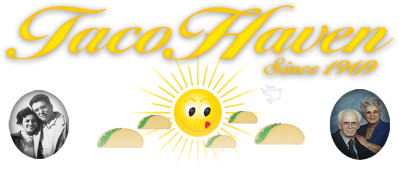

THE TACO HAVEN STORY
We would like to share a part of our history, in appreciation to you, our customer. For without you, Taco Haven would never have existed. We are deeply thankful for your years of loyalty. We could not continue without mentioning our first love - Jesus Christ. Had it not been for his sacrifice, nothing would be possible.
Looking back nearly half a century, it was a long shot. It was 1969, Nixon was in office and the nation was painfully divided by turbulence in the cities and war overseas. Rising inflation was a worldwide problem, yet our parents had faith, believing that with hard work and dedication, anything was possible. The building where Taco Haven stands today was once occupied by Studer’s Photography. Taco Haven was not always a large restaurant. In fact, today’s “To-Go” area is where the original Taco Haven stood. We have fond memories of our parents telling us about their first days there. They worked so hard toward opening day. Our father used what is now a Singer sewing machine, constructing a homemade comál. The antique is what Taco Haven’s first homemade tortillas were made on. Once they were ready, they walked across the street to what once was a Handy Andy grocery store and purchased $25.00 worth of beans, cheese, eggs and all that was necessary to start a restaurant. They finished early and had the rest of the day free before the grand opening the following day.
Our parents were so excited, that they opened the restaurant that evening. Our father was nervous. Naturally, he’d never admit it, our mother would tell us, with a smile. The neighborhood was nothing like it is today. It was very quiet. This, of course, did not help our father, so he decided to take a ride to calm his nerves. While on the road, he thought “What am I doing? I should be there with my wife, just in case she needs my help.” He hurried back to an awesome sight - a line of customers outside waiting to be served. Taco Haven was born and in the middle of her first rush. Within five years, our parents bought the building and moved Taco Haven to its present, permanent location.
Our family has had the pleasure of serving San Antonio, as well as customers from all over country and the world. It has been our unique honor to have served every person who has embraced our humble home. We still see lines outside Taco Haven these days. It’s hard not to think of our parents’ humble beginnings, though we know that our parents often do.
Our parents taught all of us to be grateful - first to God, secondly, to each and every customer, especially those who have been loyal year in and year out. Those customers have been there when things were well, as well as when there were trying times and loss. Many customers were as constant as the sun rising. For this, we are grateful.
Our parents tell us that one of the greatest joys of running a restaurant is the memory of their children, through the years, working as a family. The years spent together as a family serving you, San Antonio, is sincere joy to each and every one of us.
De parte de la familia Torres - Jerry y Elida, Jerry, Patricia, Isabel, David, Mark, Antonio y Tomás